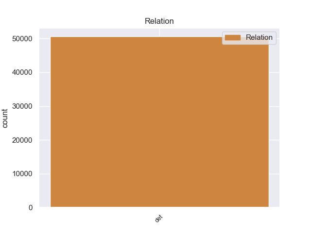
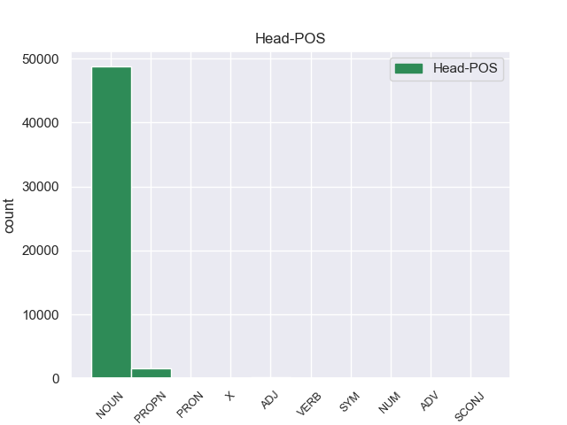

Distribution of features within this leaf



Agreement Rules sorted by frequency.
- When the dependent token is the determiner(det) of the head token, and the dependent token is DET.
1 En _ _ _ _ 0 _ _ _
2 1991 _ _ _ _ 0 _ _ _
3 , _ _ _ _ 0 _ _ _
4 como _ _ _ _ 0 _ _ _
5 ya _ _ _ _ 0 _ _ _
6 está _ _ _ _ 0 _ _ _
7 indicado _ _ _ _ 0 _ _ _
8 en _ _ _ _ 0 _ _ _
9 el _ _ _ _ 0 _ _ _
10 párrafo _ _ _ _ 0 _ _ _
11 anterior _ _ _ _ 0 _ _ _
12 , _ _ _ _ 0 _ _ _
13 se _ _ _ _ 0 _ _ _
14 creó _ _ _ _ 0 _ _ _
15 un _ _ _ _ 0 _ _ _
16 equipo _ _ _ _ 0 _ _ _
17 ad _ _ _ _ 0 _ _ _
18 hoc _ _ _ _ 0 _ _ _
19 para _ _ _ _ 0 _ _ _
20 averiguar _ _ _ _ 0 _ _ _
21 como _ _ _ _ 0 _ _ _
22 se _ _ _ _ 0 _ _ _
23 podía _ _ _ _ 0 _ _ _
24 desarrollar _ _ _ _ 0 _ _ _
25 el _ _ _ _ 0 _ _ _
26 Dialogo _ _ _ _ 0 _ _ _
27 Social _ _ _ _ 0 _ _ _
28 , _ _ _ _ 0 _ _ _
29 este _ _ _ _ 0 _ _ _
30 equipo _ _ _ _ 0 _ _ _
31 estaba _ _ _ _ 0 _ _ _
32 formado _ _ _ _ 0 _ _ _
33 por _ _ _ _ 0 _ _ _
34 representantes _ _ _ _ 0 _ _ _
35 de _ _ _ _ 0 _ _ _
36 todas _ _ _ _ 0 _ _ _
37 las el DET _ Definite=Def|Gender=Fem|Number=Plur|PronType=Art 38 det _ _
38 organizaciones organizacione NOUN _ Gender=Fem|Number=Plur 0 _ _ _
39 relacionadas _ _ _ _ 0 _ _ _
40 con _ _ _ _ 0 _ _ _
41 CES _ _ _ _ 0 _ _ _
42 , _ _ _ _ 0 _ _ _
43 UNICE _ _ _ _ 0 _ _ _
44 y _ _ _ _ 0 _ _ _
45 CEEP _ _ _ _ 0 _ _ _
46 ; _ _ _ _ 0 _ _ _
1 Jazmin _ _ _ _ 0 _ _ _
2 es _ _ _ _ 0 _ _ _
3 todo _ _ _ _ 0 _ _ _
4 lo lo PRON _ Case=Acc|Gender=Masc|Number=Sing|Person=3|PrepCase=Npr|PronType=Prs 5 det _ _
5 contrario contrario NOUN _ Gender=Masc|Number=Sing 0 _ _ _
6 , _ _ _ _ 0 _ _ _
7 es _ _ _ _ 0 _ _ _
8 tímida _ _ _ _ 0 _ _ _
9 y _ _ _ _ 0 _ _ _
10 callada _ _ _ _ 0 _ _ _
11 , _ _ _ _ 0 _ _ _
12 pero _ _ _ _ 0 _ _ _
13 siempre _ _ _ _ 0 _ _ _
14 es _ _ _ _ 0 _ _ _
15 arrastrada _ _ _ _ 0 _ _ _
16 por _ _ _ _ 0 _ _ _
17 las _ _ _ _ 0 _ _ _
18 locuras _ _ _ _ 0 _ _ _
19 y _ _ _ _ 0 _ _ _
20 travesuras _ _ _ _ 0 _ _ _
21 que _ _ _ _ 0 _ _ _
22 inventa _ _ _ _ 0 _ _ _
23 Alma _ _ _ _ 0 _ _ _
24 . _ _ _ _ 0 _ _ _
1 Se _ _ _ _ 0 _ _ _
2 espera _ _ _ _ 0 _ _ _
3 que _ _ _ _ 0 _ _ _
4 el _ _ _ _ 0 _ _ _
5 argentino _ _ _ _ 0 _ _ _
6 firme _ _ _ _ 0 _ _ _
7 por _ _ _ _ 0 _ _ _
8 lo _ _ _ _ 0 _ _ _
9 menos _ _ _ _ 0 _ _ _
10 por _ _ _ _ 0 _ _ _
11 las _ _ _ _ 0 _ _ _
12 cuatro _ _ _ _ 0 _ _ _
13 temporadas _ _ _ _ 0 _ _ _
14 que _ _ _ _ 0 _ _ _
15 le _ _ _ _ 0 _ _ _
16 quedarían _ _ _ _ 0 _ _ _
17 de _ _ _ _ 0 _ _ _
18 fútbol _ _ _ _ 0 _ _ _
19 a _ _ _ _ 0 _ _ _
20 alto alto ADJ _ Gender=Masc|Number=Sing 21 det _ _
21 nivel nivel NOUN _ Gender=Masc|Number=Sing 0 _ _ _
22 . _ _ _ _ 0 _ _ _
1 Por _ _ _ _ 0 _ _ _
2 ello _ _ _ _ 0 _ _ _
3 cada cada ADV _ Gender=Fem|Number=Sing|PronType=Dem 4 det _ _
4 vez vez NOUN _ Gender=Fem|Number=Sing 0 _ _ _
5 más _ _ _ _ 0 _ _ _
6 españoles _ _ _ _ 0 _ _ _
7 están _ _ _ _ 0 _ _ _
8 optando _ _ _ _ 0 _ _ _
9 por _ _ _ _ 0 _ _ _
10 unas _ _ _ _ 0 _ _ _
11 vacaciones _ _ _ _ 0 _ _ _
12 inteligentes _ _ _ _ 0 _ _ _
13 que _ _ _ _ 0 _ _ _
14 implican _ _ _ _ 0 _ _ _
15 viajes _ _ _ _ 0 _ _ _
16 , _ _ _ _ 0 _ _ _
17 visitas _ _ _ _ 0 _ _ _
18 turísticas _ _ _ _ 0 _ _ _
19 y _ _ _ _ 0 _ _ _
20 culturales _ _ _ _ 0 _ _ _
21 y _ _ _ _ 0 _ _ _
22 otras _ _ _ _ 0 _ _ _
23 actividades _ _ _ _ 0 _ _ _
24 de _ _ _ _ 0 _ _ _
25 ocio _ _ _ _ 0 _ _ _
26 con _ _ _ _ 0 _ _ _
27 el _ _ _ _ 0 _ _ _
28 aprendizaje _ _ _ _ 0 _ _ _
29 de _ _ _ _ 0 _ _ _
30 un _ _ _ _ 0 _ _ _
31 idioma _ _ _ _ 0 _ _ _
32 . _ _ _ _ 0 _ _ _
1 La _ _ _ _ 0 _ _ _
2 Cabeza _ _ _ _ 0 _ _ _
3 Mediana _ _ _ _ 0 _ _ _
4 se _ _ _ _ 0 _ _ _
5 halla _ _ _ _ 0 _ _ _
6 a _ _ _ _ 0 _ _ _
7 el _ _ _ _ 0 _ _ _
8 norte _ _ _ _ 0 _ _ _
9 de _ _ _ _ 0 _ _ _
10 el _ _ _ _ 0 _ _ _
11 arroyo _ _ _ _ 0 _ _ _
12 de _ _ _ _ 0 _ _ _
13 Angostura _ _ _ _ 0 _ _ _
14 , _ _ _ _ 0 _ _ _
15 una _ _ _ _ 0 _ _ _
16 de _ _ _ _ 0 _ _ _
17 las _ _ _ _ 0 _ _ _
18 corrientes _ _ _ _ 0 _ _ _
19 fluviales _ _ _ _ 0 _ _ _
20 que _ _ _ _ 0 _ _ _
21 forman _ _ _ _ 0 _ _ _
22 el _ _ _ _ 0 _ _ _
23 río _ _ _ _ 0 _ _ _
24 Lozoya _ _ _ _ 0 _ _ _
25 , _ _ _ _ 0 _ _ _
26 y _ _ _ _ 0 _ _ _
27 a _ _ _ _ 0 _ _ _
28 el _ _ _ _ 0 _ _ _
29 sur _ _ _ _ 0 _ _ _
30 de _ _ _ _ 0 _ _ _
31 el _ _ _ _ 0 _ _ _
32 Monasterio monasterio NOUN _ Gender=Masc|Number=Sing 0 _ _ _
33 de _ _ _ _ 0 _ _ _
34 El el PROPN _ Definite=Def|Gender=Masc|Number=Sing|PronType=Art 32 det _ _
35 Paular _ _ _ _ 0 _ _ _
36 , _ _ _ _ 0 _ _ _
37 de _ _ _ _ 0 _ _ _
38 el _ _ _ _ 0 _ _ _
39 que _ _ _ _ 0 _ _ _
40 le _ _ _ _ 0 _ _ _
41 separan _ _ _ _ 0 _ _ _
42 unos _ _ _ _ 0 _ _ _
43 cinco _ _ _ _ 0 _ _ _
44 kilómetros _ _ _ _ 0 _ _ _
45 . _ _ _ _ 0 _ _ _
1 El _ _ _ _ 0 _ _ _
2 bosnio _ _ _ _ 0 _ _ _
3 tiene _ _ _ _ 0 _ _ _
4 claro _ _ _ _ 0 _ _ _
5 que _ _ _ _ 0 _ _ _
6 si _ _ _ _ 0 _ _ _
7 existe existe VERB _ Mood=Ind|Number=Sing|Person=3|Tense=Pres|VerbForm=Fin 8 det _ _
8 oferta oferta NOUN _ Gender=Fem|Number=Sing 0 _ _ _
9 puede _ _ _ _ 0 _ _ _
10 presionar _ _ _ _ 0 _ _ _
11 a _ _ _ _ 0 _ _ _
12 el _ _ _ _ 0 _ _ _
13 Wolfsburgo _ _ _ _ 0 _ _ _
14 alemán _ _ _ _ 0 _ _ _
15 . _ _ _ _ 0 _ _ _
1 La _ _ _ _ 0 _ _ _
2 alarma _ _ _ _ 0 _ _ _
3 se _ _ _ _ 0 _ _ _
4 hizo _ _ _ _ 0 _ _ _
5 más _ _ _ _ 0 _ _ _
6 patente _ _ _ _ 0 _ _ _
7 cuando _ _ _ _ 0 _ _ _
8 se _ _ _ _ 0 _ _ _
9 anunció _ _ _ _ 0 _ _ _
10 que _ _ _ _ 0 _ _ _
11 las _ _ _ _ 0 _ _ _
12 regiones _ _ _ _ 0 _ _ _
13 más _ _ _ _ 0 _ _ _
14 afectadas _ _ _ _ 0 _ _ _
15 esta esta ADP _ Gender=Fem|Number=Sing|PronType=Dem 16 det _ _
16 vez vez NOUN _ Gender=Fem|Number=Sing 0 _ _ _
17 habían _ _ _ _ 0 _ _ _
18 sido _ _ _ _ 0 _ _ _
19 Rancagua _ _ _ _ 0 _ _ _
20 , _ _ _ _ 0 _ _ _
21 Valparaíso _ _ _ _ 0 _ _ _
22 y _ _ _ _ 0 _ _ _
23 Santiago _ _ _ _ 0 _ _ _
24 , _ _ _ _ 0 _ _ _
25 y _ _ _ _ 0 _ _ _
26 que _ _ _ _ 0 _ _ _
27 había _ _ _ _ 0 _ _ _
28 una _ _ _ _ 0 _ _ _
29 alarma _ _ _ _ 0 _ _ _
30 de _ _ _ _ 0 _ _ _
31 tsunami _ _ _ _ 0 _ _ _
32 que _ _ _ _ 0 _ _ _
33 abarcada _ _ _ _ 0 _ _ _
34 el _ _ _ _ 0 _ _ _
35 borde _ _ _ _ 0 _ _ _
36 costero _ _ _ _ 0 _ _ _
37 de _ _ _ _ 0 _ _ _
38 siete _ _ _ _ 0 _ _ _
39 regiones _ _ _ _ 0 _ _ _
40 de _ _ _ _ 0 _ _ _
41 el _ _ _ _ 0 _ _ _
42 territorio _ _ _ _ 0 _ _ _
43 nacional _ _ _ _ 0 _ _ _
44 . _ _ _ _ 0 _ _ _
Disagree Examples:
1 A _ _ _ _ 0 _ _ _
2 imitación _ _ _ _ 0 _ _ _
3 de _ _ _ _ 0 _ _ _
4 el _ _ _ _ 0 _ _ _
5 general _ _ _ _ 0 _ _ _
6 Erich _ _ _ _ 0 _ _ _
7 Ludendorff _ _ _ _ 0 _ _ _
8 , _ _ _ _ 0 _ _ _
9 antiguo _ _ _ _ 0 _ _ _
10 comandante _ _ _ _ 0 _ _ _
11 en _ _ _ _ 0 _ _ _
12 jefe _ _ _ _ 0 _ _ _
13 de _ _ _ _ 0 _ _ _
14 el _ _ _ _ 0 _ _ _
15 Ejército _ _ _ _ 0 _ _ _
16 alemán _ _ _ _ 0 _ _ _
17 ( _ _ _ _ 0 _ _ _
18 y _ _ _ _ 0 _ _ _
19 que _ _ _ _ 0 _ _ _
20 por _ _ _ _ 0 _ _ _
21 lo él PRON _ Case=Acc|Gender=Masc|Number=Sing|Person=3|PrepCase=Npr|PronType=Prs 22 det _ _
22 demás demás PRON _ Number=Plur|PronType=Ind 0 _ _ _
23 era _ _ _ _ 0 _ _ _
24 su _ _ _ _ 0 _ _ _
25 primo _ _ _ _ 0 _ _ _
26 carnal _ _ _ _ 0 _ _ _
27 ) _ _ _ _ 0 _ _ _
28 , _ _ _ _ 0 _ _ _
29 von _ _ _ _ 0 _ _ _
30 Hutier _ _ _ _ 0 _ _ _
31 sostuvo _ _ _ _ 0 _ _ _
32 la _ _ _ _ 0 _ _ _
33 tesis _ _ _ _ 0 _ _ _
34 de _ _ _ _ 0 _ _ _
35 que _ _ _ _ 0 _ _ _
36 el _ _ _ _ 0 _ _ _
37 ejército _ _ _ _ 0 _ _ _
38 alemán _ _ _ _ 0 _ _ _
39 no _ _ _ _ 0 _ _ _
40 había _ _ _ _ 0 _ _ _
41 sido _ _ _ _ 0 _ _ _
42 derrotado _ _ _ _ 0 _ _ _
43 en _ _ _ _ 0 _ _ _
44 los _ _ _ _ 0 _ _ _
45 campos _ _ _ _ 0 _ _ _
46 de _ _ _ _ 0 _ _ _
47 batalla _ _ _ _ 0 _ _ _
48 por _ _ _ _ 0 _ _ _
49 los _ _ _ _ 0 _ _ _
50 Aliados _ _ _ _ 0 _ _ _
51 sino _ _ _ _ 0 _ _ _
52 que _ _ _ _ 0 _ _ _
53 , _ _ _ _ 0 _ _ _
54 por _ _ _ _ 0 _ _ _
55 el _ _ _ _ 0 _ _ _
56 contrario _ _ _ _ 0 _ _ _
57 , _ _ _ _ 0 _ _ _
58 había _ _ _ _ 0 _ _ _
59 recibido _ _ _ _ 0 _ _ _
60 una _ _ _ _ 0 _ _ _
61 " _ _ _ _ 0 _ _ _
62 puñalada _ _ _ _ 0 _ _ _
63 por _ _ _ _ 0 _ _ _
64 la _ _ _ _ 0 _ _ _
65 espalda _ _ _ _ 0 _ _ _
66 " _ _ _ _ 0 _ _ _
67 a _ _ _ _ 0 _ _ _
68 manos _ _ _ _ 0 _ _ _
69 de _ _ _ _ 0 _ _ _
70 unos _ _ _ _ 0 _ _ _
71 presuntos _ _ _ _ 0 _ _ _
72 enemigos _ _ _ _ 0 _ _ _
73 interiores _ _ _ _ 0 _ _ _
74 . _ _ _ _ 0 _ _ _
1 Los _ _ _ _ 0 _ _ _
2 pacientes _ _ _ _ 0 _ _ _
3 con _ _ _ _ 0 _ _ _
4 diabetes _ _ _ _ 0 _ _ _
5 son _ _ _ _ 0 _ _ _
6 cuatro _ _ _ _ 0 _ _ _
7 veces _ _ _ _ 0 _ _ _
8 más _ _ _ _ 0 _ _ _
9 propensos _ _ _ _ 0 _ _ _
10 a _ _ _ _ 0 _ _ _
11 desarrollar _ _ _ _ 0 _ _ _
12 enfermedad enfermedad NOUN _ Gender=Fem|Number=Sing 0 _ _ _
13 cardíacas _ _ _ _ 0 _ _ _
14 que _ _ _ _ 0 _ _ _
15 aquellos aquello DET _ Definite=Def|Gender=Masc|Number=Plur|PronType=Art 12 det _ _
16 que _ _ _ _ 0 _ _ _
17 no _ _ _ _ 0 _ _ _
18 tienen _ _ _ _ 0 _ _ _
19 diabetes _ _ _ _ 0 _ _ _
20 . _ _ _ _ 0 _ _ _
1 Ya _ _ _ _ 0 _ _ _
2 es _ _ _ _ 0 _ _ _
3 tiempo _ _ _ _ 0 _ _ _
4 de _ _ _ _ 0 _ _ _
5 identificar _ _ _ _ 0 _ _ _
6 y _ _ _ _ 0 _ _ _
7 condenar _ _ _ _ 0 _ _ _
8 a _ _ _ _ 0 _ _ _
9 estos eest DET _ Definite=Def|Gender=Masc|Number=Plur|PronType=Art 10 det _ _
10 cómplices cómplices NOUN _ Gender=Masc|Number=Sing 0 _ _ _
11 de _ _ _ _ 0 _ _ _
12 los _ _ _ _ 0 _ _ _
13 crímenes _ _ _ _ 0 _ _ _
14 contra _ _ _ _ 0 _ _ _
15 la _ _ _ _ 0 _ _ _
16 humanidad _ _ _ _ 0 _ _ _
17 cometidos _ _ _ _ 0 _ _ _
18 en _ _ _ _ 0 _ _ _
19 Libia _ _ _ _ 0 _ _ _
20 por _ _ _ _ 0 _ _ _
21 las _ _ _ _ 0 _ _ _
22 élites _ _ _ _ 0 _ _ _
23 occidentales _ _ _ _ 0 _ _ _
24 y _ _ _ _ 0 _ _ _
25 sus _ _ _ _ 0 _ _ _
26 gobiernos _ _ _ _ 0 _ _ _
27 títeres _ _ _ _ 0 _ _ _
28 . _ _ _ _ 0 _ _ _
1 Ya _ _ _ _ 0 _ _ _
2 es _ _ _ _ 0 _ _ _
3 tiempo _ _ _ _ 0 _ _ _
4 de _ _ _ _ 0 _ _ _
5 identificar _ _ _ _ 0 _ _ _
6 y _ _ _ _ 0 _ _ _
7 condenar _ _ _ _ 0 _ _ _
8 a _ _ _ _ 0 _ _ _
9 estos _ _ _ _ 0 _ _ _
10 cómplices _ _ _ _ 0 _ _ _
11 de _ _ _ _ 0 _ _ _
12 los _ _ _ _ 0 _ _ _
13 crímenes _ _ _ _ 0 _ _ _
14 contra _ _ _ _ 0 _ _ _
15 la _ _ _ _ 0 _ _ _
16 humanidad _ _ _ _ 0 _ _ _
17 cometidos _ _ _ _ 0 _ _ _
18 en _ _ _ _ 0 _ _ _
19 Libia _ _ _ _ 0 _ _ _
20 por _ _ _ _ 0 _ _ _
21 las el DET _ Definite=Def|Gender=Fem|Number=Plur|PronType=Art 22 det _ _
22 élites élite NOUN _ Gender=Fem|Number=Sing 0 _ _ _
23 occidentales _ _ _ _ 0 _ _ _
24 y _ _ _ _ 0 _ _ _
25 sus _ _ _ _ 0 _ _ _
26 gobiernos _ _ _ _ 0 _ _ _
27 títeres _ _ _ _ 0 _ _ _
28 . _ _ _ _ 0 _ _ _
1 Los el DET _ Definite=Def|Gender=Masc|Number=Plur|PronType=Art 2 det _ _
2 lugareños lugareño NOUN _ Gender=Masc|Number=Sing 0 _ _ _
3 dicen _ _ _ _ 0 _ _ _
4 que _ _ _ _ 0 _ _ _
5 los _ _ _ _ 0 _ _ _
6 « _ _ _ _ 0 _ _ _
7 demonios _ _ _ _ 0 _ _ _
8 » _ _ _ _ 0 _ _ _
9 que _ _ _ _ 0 _ _ _
10 se _ _ _ _ 0 _ _ _
11 han _ _ _ _ 0 _ _ _
12 aventurado _ _ _ _ 0 _ _ _
13 a _ _ _ _ 0 _ _ _
14 ofender _ _ _ _ 0 _ _ _
15 a _ _ _ _ 0 _ _ _
16 el _ _ _ _ 0 _ _ _
17 Señor _ _ _ _ 0 _ _ _
18 Śivá _ _ _ _ 0 _ _ _
19 de _ _ _ _ 0 _ _ _
20 esta _ _ _ _ 0 _ _ _
21 manera _ _ _ _ 0 _ _ _
22 han _ _ _ _ 0 _ _ _
23 muerto _ _ _ _ 0 _ _ _
24 todos _ _ _ _ 0 _ _ _
25 en _ _ _ _ 0 _ _ _
26 el _ _ _ _ 0 _ _ _
27 intento _ _ _ _ 0 _ _ _
28 . _ _ _ _ 0 _ _ _